Creating Jobs
Jobs section is where you define your job. Creating a job is a simple three step processes. In the following three steps we will show how to add a new job in Batchly.
Code (Upload your code):
In the code section first You need to build your packaged code and upload the zipped file.
1.Select the Jobs link in the left sidebar.
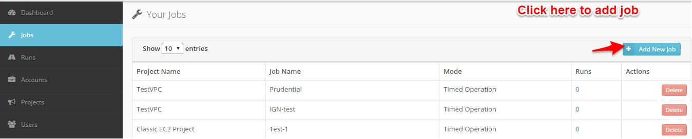
2.Job Name: Enter the Job name and Project name under which the job should execute.
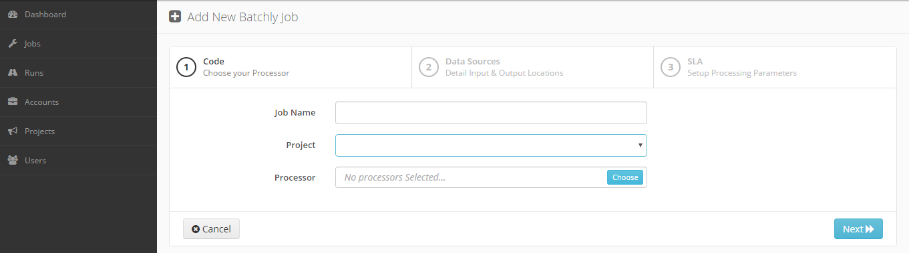
3.Processor: Package the code which includes business logic of your job, zip it and upload it.
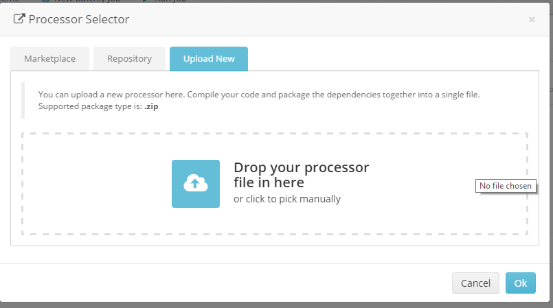
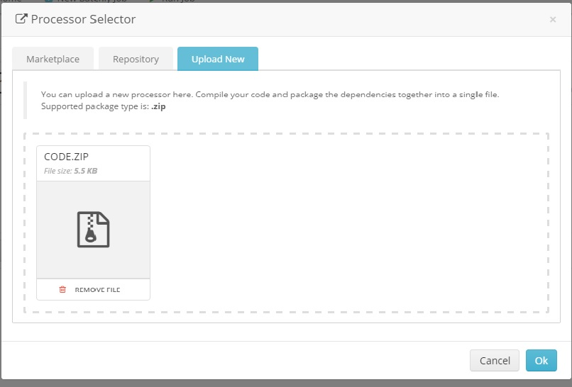
4.Operating System: specify which operating system you want it to run.
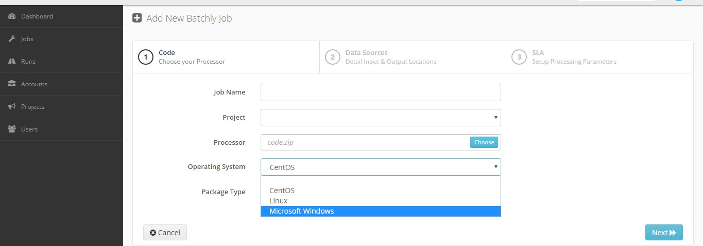
5.Package Type: Enter the package type of your application.
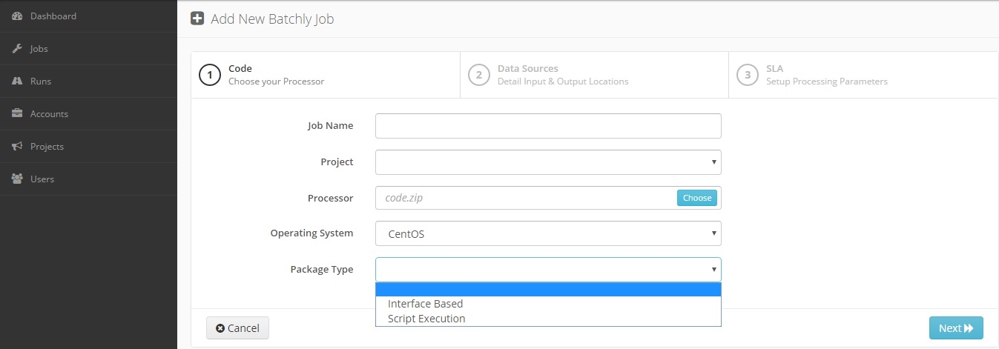
6.Code Language: Select the language of your application.
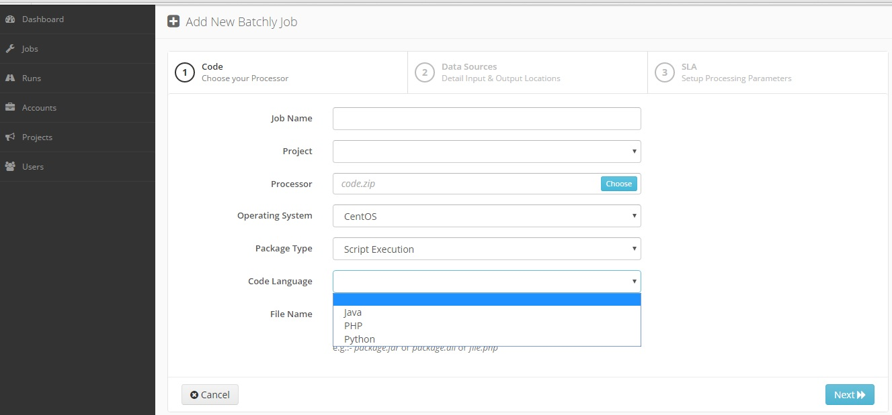
7.File Name: Enter the package name or file name that contains your application.
Data Sources (Detail Input and Output location):
In this section you have to define the input and output data sources location. In Batchly we have following four request type.
1.Request type: Select the request type of the job.
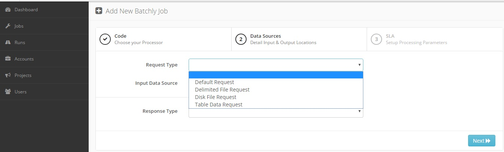
2.Input data Source: Select the correspoding data source of the job.
3.Response Type: Select the response type of the job.
SLA (Setup Processing parameters):
1.Operation mode: Select the operation mode you want to run.
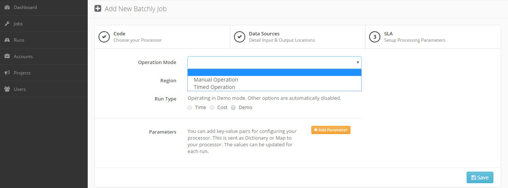
2.Region: Select the region where the job should execute.
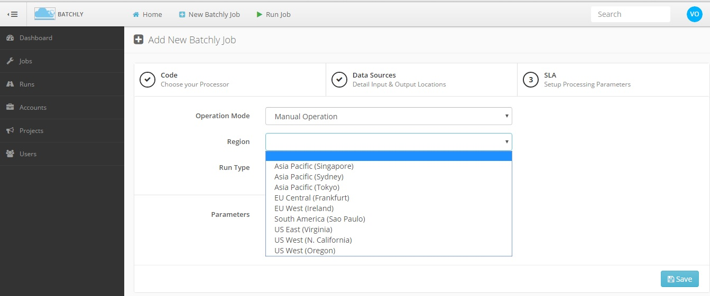
3.Run Type: Select the Demo mode to operate the run type.
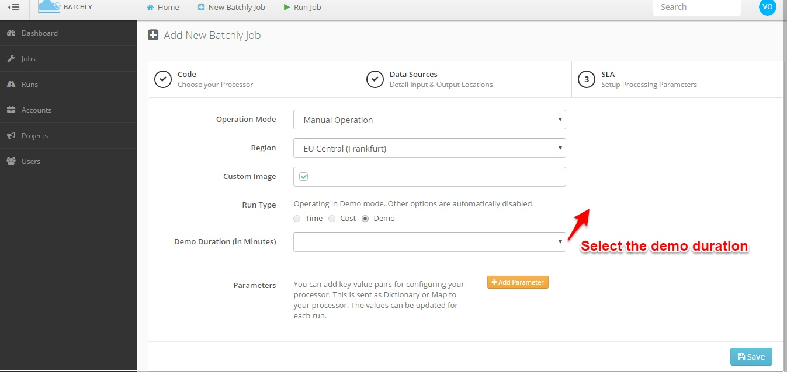
4.Parameters: Add key-value pairs for configuring your processor. Add parameters will ask you the add the parameter name and parameter value.
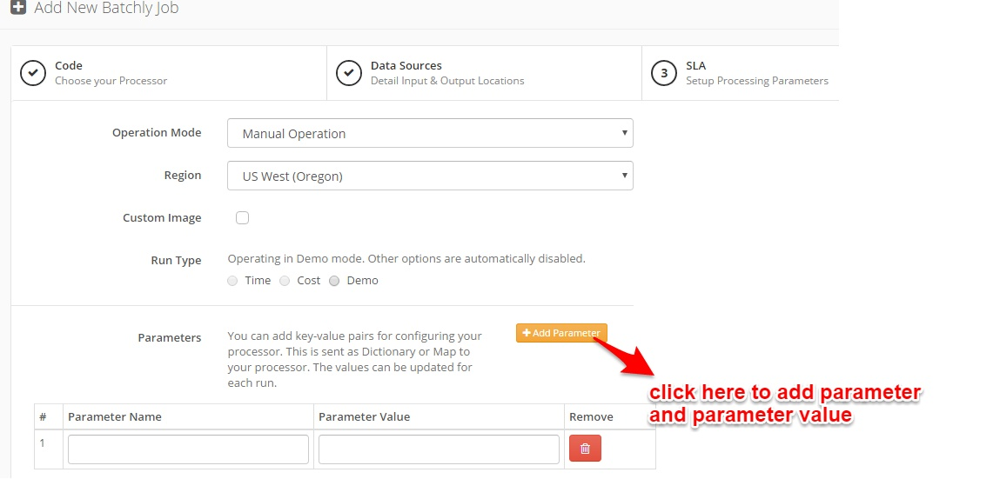